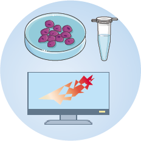

2012
2015
2021
2015
2018
2021
Kangli Wang
Contact
Education
Projects
I am currently a postdoc fellow at UCSanDiego. My research interests are bioinformatics, epigenetics, and genomics. We focus on decipher the origin of neuron transformation after gene knockdown now.
Email：dzq0123456789@live.com
Github：https://github.com/wkl1990
Sichuan Agriculture University
Biological Science
Wenzhou Medical University
Biology
Central South University
Genetics
Q-RRBS
Q-RRBS is a DNAm sequencing method, which could eliminate PCR-induced artifacts and detect methylome profiling accurately, especially powerful for single cell. The paper has been published on Epigenetics journal.
CNV-lncRNAs
CNV-lncRNAs investigated lncRNAs within 10 SCZ risk–associated CNV deletion regions and examined their potential contribution to SCZ risk. WGCNA analysis on transcriptome of brain tissue identified one neuronal function–related coexpression module contained a hub lncRNA called DGCR5 within the 22q11.2 CNV region. The paper has been published on Science Translational Medicine journal.
GCPs
GCPs project aims to investigate how DNAm and gene expression are coordinated across different human tissues and developmental stages, as well as the biological significance of such correlations. The majority of correlated gene-CpG pairs were tissue- or development-specific and the correlation direction can be opposite in different tissues and ages. The paper has been published on under Epigenetics journal.
Copyright